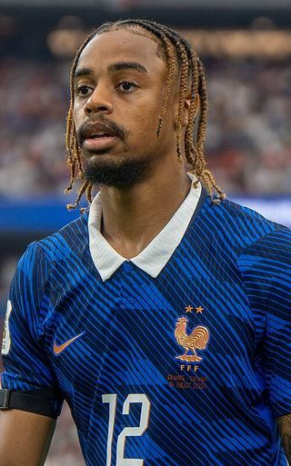

Ezzcoins › Player pages › Bradley Barcola

85
LW

Barcola
PAC92
SHO76
PAS78
DRI84
DEF39
PHY67
PlayStyles
Finesse ShotLow Driven ShotGamechangerFirst TouchBradley Barcola
85 LW · Liverpool · Premier League ·  France
France
15,000Recent console price
87Meta rating · RM +2 vs overall
RM87LM87LW86RW86
PAC92
SHO76
PAS78
DRI84
DEF39
PHY67
Chemistry style
Turn on JavaScript to see this card with each chemistry style.
- Position
- LW (also RM, LM, RW)
- Club
- Liverpool
- League
- Premier League
- Nation
- France
- Skill moves
- 4★
- Weak foot
- 4★
- Preferred foot
- Right
- Height
- 188 cm
- Age
- 24
- PlayStyles+
- Rapid+
Meta rating: Ezzcoins' own estimate of how well this card plays in game, worked out from its stats for each position it can play, its skill moves, weak foot and PlayStyle+. An average card scores about its overall rating; higher means it plays above its rating.
Watch on EzzcoinsBradley Barcola's special cards
More from Liverpool
- 88
 Virgil van DijkCB
Virgil van DijkCB - 87
 AlissonGK
AlissonGK - 86
 Alexander IsakST
Alexander IsakST - 86
 Dominik SzoboszlaiCAM
Dominik SzoboszlaiCAM - 86
 Florian WirtzCAM
Florian WirtzCAM - 85Hugo EkitikéST
- 85Ryan GravenberchCDM
- 84
 Alexis Mac AllisterCM
Alexis Mac AllisterCM